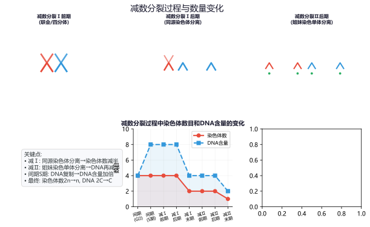
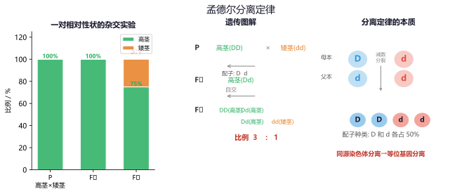
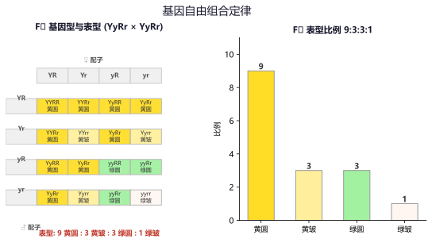
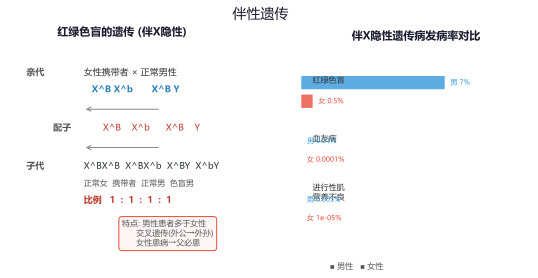
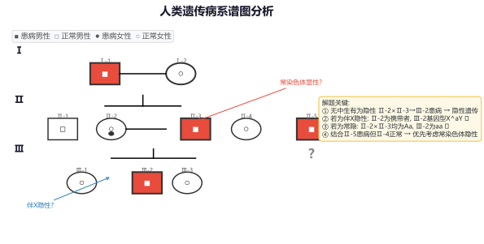
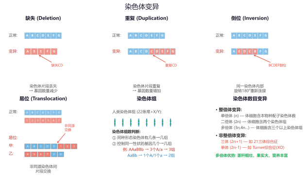
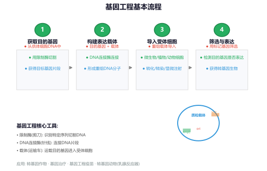

专题一：遗传的细胞基础
减数分裂与受精作用
减数分裂的概念：减数分裂是进行有性生殖的生物在产生成熟生殖细胞时，染色体数目减半的细胞分裂。减数分裂的两次连续分裂中染色体只复制一次，最终子细胞中染色体数目减半。
减数第一次分裂：
前期Ⅰ：同源染色体联会形成四分体（四分体 = 一对同源染色体 = 4条染色单体），可能发生交叉互换（非姐妹染色单体间交换片段，是基因重组的重要来源）。
中期Ⅰ：同源染色体成对排列在赤道板两侧。
后期Ⅰ：同源染色体分离（等位基因分离），非同源染色体自由组合（基因重组的重要来源），染色体数目减半。
末期Ⅰ：形成两个次级性母细胞（染色体数 n，每条含姐妹染色单体）。
减数第二次分裂（无间期、无同源染色体）：
前期Ⅱ：核膜消失，染色体排列散乱。
中期Ⅱ：着丝粒排列在赤道板上。
后期Ⅱ：着丝粒分裂，姐妹染色单体分开成为独立染色体，染色体数目暂时加倍。
末期Ⅱ：形成四个子细胞（精细胞或卵细胞和极体）。
精子与卵细胞形成的区别：
精子：1个精原细胞 → 4个等大精子（细胞质均等分裂）
卵细胞：1个卵原细胞 → 1个卵细胞 + 3个极体（细胞质不均等分裂，卵细胞大含丰富营养）

减数分裂过程中染色体数目和DNA含量的变化
受精作用：卵细胞和精子结合成受精卵的过程。受精卵的染色体数目恢复到体细胞染色体数（2n），其中一半来自父方一半来自母方。受精作用使后代具有双亲的遗传物质，增加了生物的多样性。
例题1：某生物体细胞染色体数为2n=8，减数分裂过程中形成的四分体数目是多少？减数第二次分裂后期的染色体数？
解析：
(1) 四分体数目 = 同源染色体对数 = n = 4（因为2n=8，n=4）。
(2) 减数第二次分裂后期着丝粒分裂，姐妹染色单体分开，染色体数暂时为2n=8（但无同源染色体）。
(3) 最终精细胞/卵细胞中染色体数为n=4。
易错提醒：减数第二次分裂后期虽然有8条染色体，但"无同源染色体"——这是与有丝分裂后期的关键区别。
例题2：下列关于减数分裂的叙述正确的是（ ）
A．减数第一次分裂后期同源染色体分离，染色体数减半
B．减数第二次分裂后期染色体数等于体细胞染色体数
C．交叉互换发生在减数第一次分裂后期
D．减数分裂过程中染色体复制两次
解析：
A✓：减Ⅰ后期同源染色体分离进入不同子细胞，染色体数减半（2n→n）。
B✓：减Ⅱ后期着丝粒分裂，染色体数暂时=体细胞数（但无同源染色体）。
C✗：交叉互换发生在减Ⅰ前期（联会/四分体时期），不是后期。
D✗：减数分裂染色体只复制一次（间期S期），但细胞分裂两次。
答案：AB
练习1：人的体细胞有46条染色体，减数分裂产生的精子中染色体数目是多少？四分体数目是多少？
答案：精子中23条，四分体23个（n=23对同源染色体）。
练习2：卵细胞形成过程中，初级卵母细胞、次级卵母细胞、卵细胞中的染色体数之比是多少？
答案：初级卵母细胞(2n) : 次级卵母细胞(n) : 卵细胞(n) = 2:1:1。注意初级卵母细胞中DNA已复制（4C），但染色体数仍为2n。
专题二：基因分离定律
孟德尔定律
一对相对性状的杂交实验：孟德尔用纯种高茎豌豆（DD）与纯种矮茎豌豆（dd）杂交，F₁全部为高茎（Dd）。F₁自交，F₂出现性状分离，高茎:矮茎≈3:1。
分离定律的实质：在减数分裂形成配子时，等位基因随同源染色体的分开而分离，分别进入不同的配子中，独立地遗传给后代。

孟德尔豌豆杂交实验与分离定律的本质
重要概念：
显性性状：F₁表现出的性状（由显性基因控制，大写字母表示）
隐性性状：F₁未表现、F₂重新出现的性状（小写字母表示）
纯合子：等位基因相同的个体（DD，dd）→ 稳定遗传
杂合子：等位基因不同的个体（Dd）→ 后代会发生性状分离
验证分离定律的方法：
① 测交法：F₁ × 隐性纯合 → 1:1 比例
② 自交法：F₁ → F₂ 出现 3:1 分离比
③ 花粉鉴定法：水稻糯性/非糯性花粉遇碘染色不同，杂合子花粉呈两种不同颜色
例题3：豌豆的高茎(D)对矮茎(d)为显性。一株高茎豌豆与一株矮茎豌豆杂交，后代中高茎:矮茎=1:1。则亲本的基因型是什么？
解析：
测交类型：高茎 × 矮茎(dd)，后代1:1 → 高茎一定是杂合子Dd。
所以亲本基因型为 Dd × dd。
变式：若后代全为高茎，则亲本中高茎为纯合子DD × dd。
例题4：人类白化病是常染色体隐性遗传病（aa）。一对表型正常的夫妇生了一个白化病孩子，他们再生一个孩子患白化病的概率是多少？是正常孩子的概率？
解析：
夫妇表型正常但生出aa患儿 → 双方均为杂合子Aa。
Aa × Aa → AA:Aa:aa = 1:2:1
子代患病(aa)概率 = 1/4
子代表型正常(AA+Aa)概率 = 3/4
关键：已经生出一个患病孩子，不影响下一个孩子的患病概率（每次独立事件）。
练习3：一株基因型为Aa的玉米自交，F₁中基因型AA:Aa:aa=？若将F₁中的显性个体全部淘汰，剩下的个体再自交，F₂中显性性状的比例是多少？
答案：F₁ AA:Aa:aa=1:2:1。淘汰显性后只剩aa，F₂全部为隐性（aa）。
练习4：人类多指症是常染色体显性遗传病（T）。一对夫妇，丈夫多指（Tt），妻子正常（tt），他们生一个患病孩子的概率是多少？
答案：Tt × tt → Tt:tt = 1:1，患病(Tt)概率=1/2。
专题三：基因自由组合定律
两对及以上相对性状
两对相对性状的杂交实验：纯种黄色圆粒(YYRR) × 绿色皱粒(yyrr)，F₁全部黄色圆粒(YyRr)。F₁自交，F₂出现4种表型：黄圆:黄皱:绿圆:绿皱 ≈ 9:3:3:1。
自由组合定律的实质：在减数第一次分裂后期，非同源染色体上的非等位基因自由组合，独立地遗传给后代。

孟德尔自由组合定律：F₂ 9:3:3:1表型比例
解题方法——分解组合法（乘法原理）：将多对等位基因分别按分离定律分析，再相乘。
例：AaBb × AaBb
Aa × Aa → 子代AA:Aa:aa = 1:2:1（3种基因型，2种表型）
Bb × Bb → 子代BB:Bb:bb = 1:2:1（3种基因型，2种表型）
综合：基因型 3×3=9种，表型 2×2=4种
例题5：基因型为AaBb的个体与aaBb的个体杂交，子代中A_B_的比例是多少？基因型aaBb的比例是多少？
解析：
(1) Aa × aa → Aa:aa = 1:1，A_的概率为1/2
(2) Bb × Bb → BB:Bb:bb = 1:2:1，B_的概率为3/4
(3) A_B_ = 1/2 × 3/4 = 3/8
(4) aaBb = 1/2(aa) × 1/2(Bb) = 1/4
答案：A_B_ = 3/8，aaBb = 1/4
例题6：已知A/a和B/b两对等位基因独立遗传。现有基因型AaBb的个体自交，子代中表型不同于亲本的比例是多少？（完全显性）
解析：
亲本表型为A_B_（双显性），子代表型及比例：
A_B_(9/16) : A_bb(3/16) : aaB_(3/16) : aabb(1/16)
不同于亲本的表型 = A_bb + aaB_ + aabb = 3/16 + 3/16 + 1/16 = 7/16
答案：7/16
练习5：某植物花色由两对独立遗传的等位基因控制，A_B_为紫色，A_bb和aaB_为红色，aabb为白色。AaBb自交，子代中紫花:红花:白花的比例是多少？
答案：A_B_=9/16紫，A_bb+aaB_=6/16红，aabb=1/16白 → 紫:红:白=9:6:1。
练习6：黄色(Y)圆粒(R)豌豆与黄色皱粒豌豆杂交，子代中黄色:绿色=3:1，圆粒:皱粒=1:1。求亲本的基因型。
答案：黄色:绿色=3:1 → Yy×Yy；圆粒:皱粒=1:1 → Rr×rr。所以亲本为YyRr × Yyrr。
专题四：伴性遗传
性染色体与遗传
伴X隐性遗传：致病基因位于X染色体上，隐性方式遗传。特点：男性患者多于女性；交叉遗传（外公→女儿→外孙）；女性患病→其父和其子必患病（女病父子病）。
伴X显性遗传：致病基因位于X染色体上，显性方式遗传。特点：女性患者多于男性；男性患病→其母和其女必患病（男病母女病）；代代连续遗传。
伴Y遗传：致病基因只位于Y染色体上。特点：父传子、子传孙，患者均为男性。
人类红绿色盲（伴X隐性遗传，X^b 表示色盲基因）：
女性正常(X^B X^B) × 男性正常(X^B Y) → 全部正常
女性携带者(X^B X^b) × 男性正常(X^B Y) → 儿子1/2患病
女性携带者(X^B X^b) × 男性色盲(X^b Y) → 儿子1/2患病，女儿1/2患病
女性色盲(X^b X^b) × 男性正常(X^B Y) → 儿子全部色盲，女儿全部为携带者

伴X隐性遗传（红绿色盲）的遗传规律与男女发病率对比
伴性遗传在实践中的应用：
① 遗传咨询——推算后代患病概率
② 利用伴性遗传进行育种（如用芦花鸡与非芦花鸡的伴性遗传鉴别雏鸡性别）
③ 产前诊断和基因检测
例题7：一对表型正常的夫妇生了一个红绿色盲的儿子，他们再生一个色盲女儿的概率是多少？
解析：
红绿色盲为伴X隐性遗传（X^b表示色盲基因）。
夫妇表型正常，儿子色盲（X^bY）→ 色盲基因来自母亲（X^B X^b该母亲为携带者）。
P：X^B X^b × X^B Y → 子代：X^B X^B, X^B X^b, X^B Y, X^b Y
女儿(X^B X^B 或 X^B X^b)全部正常 → 女儿患病概率 = 0
关键：女儿从父亲处获得X^B（父亲正常），不可能患病。
答案：0
例题8：已知抗维生素D佝偻病是伴X显性遗传病（D）。一对夫妇，妻子患病（X^D X^d），丈夫正常（X^d Y），他们生一个患病孩子的概率是多少？
解析：
P：X^D X^d × X^d Y → 子代：X^D X^d(病女), X^d X^d(正常女), X^D Y(病儿), X^d Y(正常儿)
患病概率(不论性别) = 2/4 = 1/2
答案：1/2
练习7：血友病是伴X隐性遗传病。一对表型正常的夫妇生了一个患血友病的儿子。问：该夫妇的基因型是什么？他们再生一个儿子患血友病的概率是多少？
答案：X^H X^h × X^H Y，儿子患病(X^h Y)概率=1/2（注意是儿子中患病概率，不是所有后代）。
练习8：果蝇的白眼为伴X隐性遗传（X^w Y为白眼雄果蝇）。纯合红眼雌果蝇(X^W X^W)与白眼雄果蝇(X^w Y)杂交，F₁和F₂的表型及比例如何？
答案：P: X^W X^W × X^w Y → F₁: X^W X^w(红眼雌), X^W Y(红眼雄)全部红眼。F₁互交X^W X^w × X^W Y → F₂: X^W X^W: X^W X^w: X^W Y: X^w Y = 1:1:1:1，红眼雌:红眼雄:白眼雄=2:1:1，所有雌果蝇均为红眼。
专题五：系谱图分析
遗传方式判定
系谱图分析的一般步骤：
① 判断显隐性：无中生有→隐性（双亲正常，子代患病）；有中生无→显性（双亲患病，子代正常）
② 判断致病基因位置（常染色体 vs 伴X）：
• 伴X隐性特征：母病子必病、女病父必病（交叉遗传）
• 伴X显性特征：父病女必病、子病母必病（连续遗传）
• 伴Y特征：全为男性，父传子
③ 若不符合伴性特征 → 常染色体遗传

系谱图分析：确定遗传方式的解题思路与技巧
不同遗传方式的特点对比：
常染色体隐性：男女患病机会均等，隔代遗传，患者双亲往往为携带者
常染色体显性：男女患病机会均等，代代传递，双亲一方患病→子女1/2患病
伴X隐性：男患多于女患，隔代交叉遗传，女病→父和子均患病
伴X显性：女患多于男患，连续遗传，男病→母和女均患病
伴Y：仅男性患病，代代相传
例题9：下列系谱图中，黑色为患病个体，白色为正常个体。请判断最可能的遗传方式（需给出依据）。
已知：第一代：Ⅰ-1(男)正常 × Ⅰ-2(女)正常 → Ⅱ-1(女)患病
第二代：Ⅱ-1(女)患病 × Ⅱ-2(男)正常 → Ⅲ-1(男)正常, Ⅲ-2(女)正常, Ⅲ-3(男)患病
解析：
(1) 显隐性判断：Ⅰ-1和Ⅰ-2正常，生出Ⅱ-1患病 → 无中生有为隐性
(2) 位置判断：该病为隐性遗传。若为伴X隐性，则患病女性Ⅱ-1 → 其父Ⅰ-1必患病，但Ⅰ-1正常 → 排除伴X隐性
(3) 结论：该病为常染色体隐性遗传
(4) 基因型推断：Ⅰ-1和Ⅰ-2均为Aa，Ⅱ-1为aa，Ⅱ-2为AA或Aa
例题10：某家族遗传系谱图中，所有男性均患病，女性均正常，且该病连续三代传递。最可能的遗传方式是什么？
解析：
特点：① 只有男性患病 ② 父传子、子传孙（连续）
这符合伴Y染色体遗传的典型特征。
答案：伴Y染色体遗传
练习9：一对表型正常的夫妇（均已婚配）生了一个患某遗传病的女儿。问该病的遗传方式是什么？这对夫妇的基因型如何？
答案：常染色体隐性遗传（因为女儿患病，若为伴X隐性则父亲必患病，但父亲正常）。夫妇均为杂合子(Aa)。
练习10：在一个家系中，一男性患病，他的母亲和女儿均患病，但妻子和儿子正常。最可能的遗传方式是什么？
答案：伴X显性遗传。男病→女病（母亲和女儿均患病），符合伴X显性特征。
专题六：基因突变与染色体变异
可遗传变异
基因突变：DNA分子中发生碱基对的替换、增添或缺失，引起基因碱基序列的改变。
类型：自发突变（自然状态下发生，频率极低）和人工诱变（物理/化学/生物因素诱导）
特点：普遍性、随机性、不定向性（基因突变的方向不确定，产生多种等位基因）、低频性、多害少利性
意义：是生物变异的根本来源，为生物进化提供原始材料
基因重组的类型：
① 自由组合型：减Ⅰ后期非同源染色体上的非等位基因自由组合
② 交叉互换型：减Ⅰ前期四分体中非姐妹染色单体的交叉互换
③ 基因工程（人为重组DNA）
意义：是生物多样性的重要来源（不是新基因的来源，只是已有基因的重新组合）
染色体变异：
结构变异：缺失(片段丢失)、重复(片段加倍)、倒位(旋转180°)、易位(非同源染色体间交换)
数目变异：整倍体（单倍体、多倍体）和非整倍体（三体/单体）

染色体结构变异与数目变异的类型分析
例题11：下列关于基因突变和基因重组的叙述，正确的是（ ）
A．基因突变一定能改变生物的表型
B．基因重组只能发生在减数分裂过程中
C．基因突变是产生新基因的途径
D．基因重组能产生新的性状
解析：
A✗：基因突变不一定改变表型（如隐性突变、密码子简并性、突变发生在非编码区等）。
B✗：基因工程也属于广义的基因重组。
C✓：基因突变产生新的等位基因，是生物变异的根本来源。
D✗：基因重组是已有基因的重新组合，产生新的基因型而非新的性状。
答案：C
例题12：普通小麦为六倍体（6n=42），其体细胞中含有42条染色体。问：小麦的一个染色体组含多少条染色体？单倍体小麦体细胞中含多少条染色体？
解析：
1. 六倍体意味着体细胞中含有6个染色体组，共42条染色体。
2. 一个染色体组中的染色体数目 = 42/6 = 7条。
3. 单倍体是体细胞中含本物种配子染色体数目的个体。
4. 六倍体小麦的配子含3个染色体组，染色体数 = 3×7 = 21条。
5. 所以单倍体小麦体细胞含21条染色体（3个染色体组）。
易错：单倍体不等于一个染色体组！二倍体的单倍体是一个染色体组，多倍体的单倍体可以含多个染色体组。
练习11：秋水仙素诱导多倍体的原理是什么？处理对象是哪类细胞？
答案：秋水仙素抑制纺锤体形成，导致染色体复制后不分离，染色体数目加倍。处理对象是萌发的种子或幼苗（分生组织细胞，能进行有丝分裂）。
练习12：基因突变一定会导致蛋白质结构改变吗？为什么？
答案：不一定。原因：① 密码子简并性（同义突变）；② 突变发生在非编码区（内含子、启动子等）；③ 突变发生在隐性等位基因上（若为AA→Aa，表型不变）。
专题七：基因工程与育种
现代生物技术
基因工程（重组DNA技术）：按照人们的意愿，将一种生物的某种基因提取出来，加以修饰改造，然后导入另一种生物的细胞中，使后者定向产生人类需要的性状。
基因工程的基本工具：
限制酶（"分子剪刀"）：从原核生物中分离，能在特定核苷酸序列上切割DNA，产生黏性末端或平末端。
DNA连接酶（"分子针线"）：将两个DNA片段连接起来，恢复磷酸二酯键。
载体（"运输车"）：将目的基因导入受体细胞，常用载体有质粒、λ噬菌体、动植物病毒等。
基因工程的基本步骤：
① 提取目的基因 → ② 构建基因表达载体（目的基因与载体结合）→ ③ 将重组载体导入受体细胞 → ④ 目的基因的检测与表达鉴定

基因工程的基本操作流程：从获取目的基因到获得转基因生物
几种育种方法的比较：
杂交育种：利用基因重组原理，将不同品种的优良性状集中到同一品种上。方法简单但周期长，后代会出现性状分离。
诱变育种：利用物理/化学因素诱导基因突变。可产生新基因，提高突变频率，但有利变异少，需大量处理材料。
单倍体育种：花药离体培养→单倍体→秋水仙素处理→纯合二倍体。缩短育种年限（2年即可），所得植株全部为纯合子。
多倍体育种：秋水仙素处理萌发的种子或幼苗。茎秆粗壮、果实大、营养成分高，但发育延迟、结实率低。
基因工程育种：定向改造生物性状，可跨物种转移基因。技术复杂，安全性顾虑。
例题13：利用基因工程技术培育转基因抗虫棉，以下操作正确的是（ ）
A．用限制酶切割棉花细胞的DNA
B．用DNA连接酶将抗虫基因与载体连接
C．将重组载体导入棉花体细胞
D．检测棉花植株是否表达抗虫蛋白
解析：
A✗：限制酶切割供体生物的DNA以获得目的基因，同时切割载体。
B✓：目的基因与载体用同种限制酶切割→相同黏性末端→DNA连接酶连接→重组表达载体。
C✓：重组载体可用农杆菌转化法导入棉花细胞。
D✓：通过抗虫接种实验或分子检测（DNA杂交、抗原-抗体杂交）进行检测。
答案：BCD
例题14：现有基因型为AAbb和aaBB的两种植物（两对基因独立遗传），欲培育出基因型为AABB的优良品种。请设计最快的育种方案。
解析：
方法一（杂交育种）：AAbb × aaBB → F₁(AaBb) → F₁自交 → F₂中AABB占1/16 → 需要多代自交直至纯合（约需4-5年）。
方法二（单倍体育种，更快）：
① AAbb × aaBB → F₁(AaBb)（1年）
② F₁花药离体培养 → 单倍体植株（4种基因型：AB, Ab, aB, ab）（1年）
③ 秋水仙素处理单倍体幼苗 → 获得纯合植株（AABB, AAbb, aaBB, aabb）（当年）
④ 选择AABB即可。共需约2年。
单倍体育种优势：只需2年即可获得纯合品种，而杂交育种需4-5年。
练习13：基因工程中常用的运载体有哪些？运载体需要具备哪些条件？
答案：常用载体：质粒、λ噬菌体衍生物、动植物病毒。条件：①能在宿主细胞中复制并稳定保存；②具有多个限制酶切位点；③具有标记基因（如抗生素抗性基因）用于筛选。
练习14：单倍体育种中花药离体培养获得的单倍体植株往往高度不育，为什么？如何处理才能恢复可育？
答案：单倍体植株体细胞中只有一个染色体组，减数分裂时同源染色体无法正常联会，不能形成正常配子→高度不育。用秋水仙素处理使染色体加倍后即可恢复可育性。
专题八：综合应用与遗传计算
综合运用
遗传概率计算中的常见类型：
(1) 自交与自由交配：
自交：相同基因型个体交配（如Aa自交→1/4AA、1/2Aa、1/4aa）
自由交配（随机交配）：群体中所有个体之间随机交配——用配子法（基因频率法）计算更简便
例：群体中AA占1/3、Aa占2/3，自由交配后代：
配子类型及比例：A = 1/3 + 1/2×2/3 = 2/3，a = 1/3
后代：AA=(2/3)²=4/9, Aa=2×2/3×1/3=4/9, aa=(1/3)²=1/9
(2) 哈代-温伯格定律：在理想条件下，群体中各基因型频率满足 p²+2pq+q²=1，其中p和q分别为等位基因A和a的基因频率。
适用条件：无限大的随机交配群体，无突变、无迁移、无自然选择。
应用：根据隐性纯合体(aa)的频率q² = 发病率 → 可计算携带者频率2pq和正常基因频率p。
(3) 条件概率问题：已知某个体表型正常，问其是携带者的概率？
例：Aa×Aa → 子代基因型AA:Aa:aa=1:2:1。现一子代表型正常（排除aa）→ 实际可能为AA(1/3)或Aa(2/3)，故该正常个体是携带者的概率为2/3。
关键：条件概率 = 目标事件概率 ÷ 总条件事件概率。
复杂遗传题解题思路：
① 确定显隐性关系和遗传方式（常/伴性）
② 写出已知个体的基因型（不能确定的用"__"标注）
③ 计算需要推算的概率——注意条件概率
④ 涉及多对基因时先用分离定律分别计算再相乘
⑤ 注意"患病男孩"与"男孩患病"的区别：
"患病男孩" = 患病概率 × 1/2（考虑性别概率）
"男孩患病" = 患病男孩在男性后代中的比例（不需要乘以1/2）
例题15：某种常染色体隐性遗传病在人群中发病率为1/10000。一对表型正常的夫妇生了一个患病孩子，他们再生一个正常孩子的概率是多少？这对夫妇中妻子是携带者的概率是多少？
解析：
(1) 已生了一个患病孩子(aa) → 夫妇均为杂合子(Aa)。
(2) Aa × Aa → 子代AA:Aa:aa=1:2:1
(3) 正常孩子(AA+Aa)概率 = 3/4
(4) 妻子表型正常但已生患病孩子 → 确定妻子为携带者Aa，概率100%。
注意：如果问题是"表型正常的女性是携带者的概率"，群体中正常女性携带者频率=2pq/(p²+2pq)，其中q²=1/10000 → q=1/100, p=99/100 → 携带者频率约为2/101≈1.98%。
答案：再生一个正常孩子概率=3/4；妻子已确定为携带者概率=100%（已生育的前提改变了条件概率）。
例题16：某植物花色由两对独立遗传的等位基因控制（完全显性），A_B_为紫色，A_bb为红色，aaB_为蓝色，aabb为白色。现有一紫色植株与一白色植株杂交，后代紫:红:蓝:白=1:1:1:1。求该紫色植株的基因型。
解析：
白色植株基因型为aabb（产生的配子只有ab一种）。
测交后代出现四种表型1:1:1:1 → 紫色植株产生了四种等比例的配子：AB, Ab, aB, ab。
能产生这四种配子的基因型为AaBb。
验证：AaBb × aabb → AaBb(紫):Aabb(红):aaBb(蓝):aabb(白)=1:1:1:1 ✓
答案：该紫色植株基因型为AaBb。
练习15：某人群中红绿色盲的男性发病率为7%。问：女性发病率和携带者频率各是多少？（红绿色盲为伴X隐性遗传）
答案：男性发病率=q=7%=0.07。女性发病率=q²=0.49%≈0.5%。女性携带者频率=2pq=2×0.93×0.07≈13%。
练习16：AaBbCc三对等位基因独立遗传，该个体自交后代中基因型为AaBbCc的比例是多少？A_B_C_的比例是多少？
答案：每对基因按分离定律：Aa×Aa→1/2Aa，Bb×Bb→1/2Bb，Cc×Cc→1/2Cc。所以AaBbCc=(1/2)³=1/8。A_B_C_=(3/4)³=27/64。
练习17：在一个随机交配的大群体中，常染色体隐性遗传病aa的发病率为1/2500。求正常基因频率p和携带者(Aa)在正常人群中的比例。
答案：q²=1/2500 → q=1/50=0.02，p=1-q=0.98。携带者在正常人中比例=2pq/(p²+2pq)=2×0.98×0.02/(0.9604+0.0392)≈0.0392/0.9996≈3.92%。
综合题：人类某遗传病受一对等位基因控制（A/a）。下图为一个家系的系谱图（□男○女，黑色为患病者）。已知Ⅰ-1不携带致病基因。请回答：
（1）该病的遗传方式是什么？
（2）Ⅱ-3的基因型是什么？
（3）Ⅱ-3与Ⅱ-4（正常女性）结婚，生一个患病男孩的概率是多少？
解析：
（1）Ⅰ-1和Ⅰ-2正常 → Ⅱ-1患病（男），为隐性遗传。Ⅰ-1不携带致病基因 → 排除了常染色体隐性（若是常隐，Ⅰ-1应为Aa），所以为伴X隐性遗传。
（2）Ⅱ-3为正常男性 → 基因型为X^A Y。
（3）Ⅱ-4为正常女性，其父Ⅰ-1为X^A Y，其母Ⅰ-2为携带者X^A X^a → Ⅱ-4为X^A X^A或X^A X^a（各1/2概率）。
若Ⅱ-4为X^A X^a（概率1/2），则与Ⅱ-3(X^A Y)后代中患病男孩(X^a Y)概率=1/4。
综合计算：生患病男孩概率 = 1/2 × 1/4 = 1/8。
练习18：某植物自花传粉，基因型为AaBB和AABb各占50%。求该群体自交后代中A_B_的比例。
答案：AaBB自交→A_BB=3/4，AABb自交→AAB_=3/4。各占50% → A_B_ = 1/2×3/4 + 1/2×3/4 = 3/4。